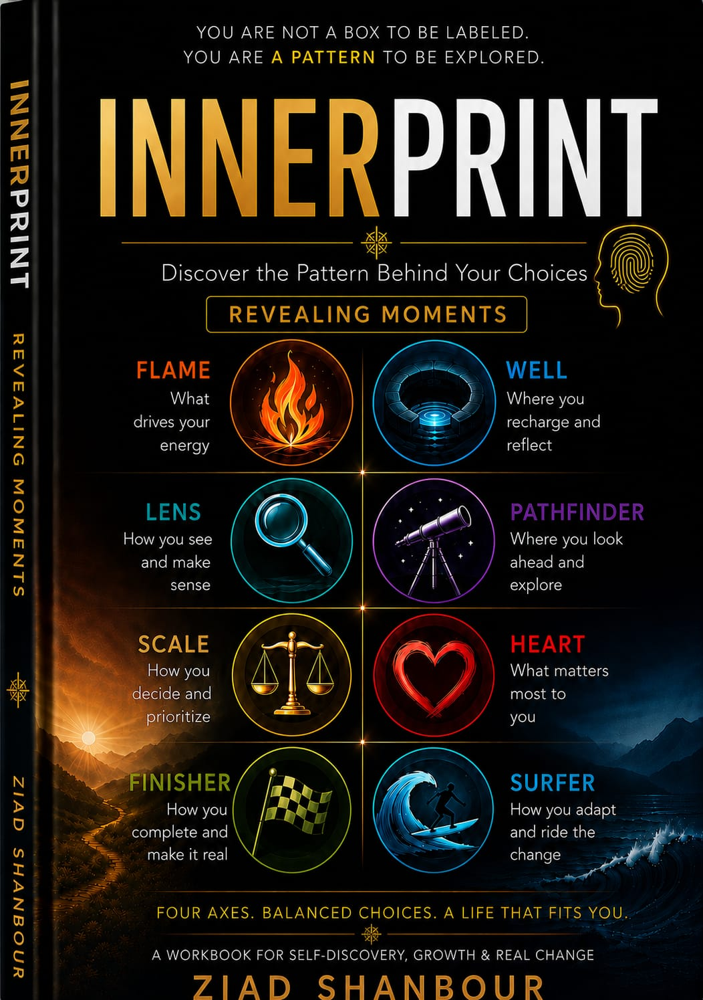
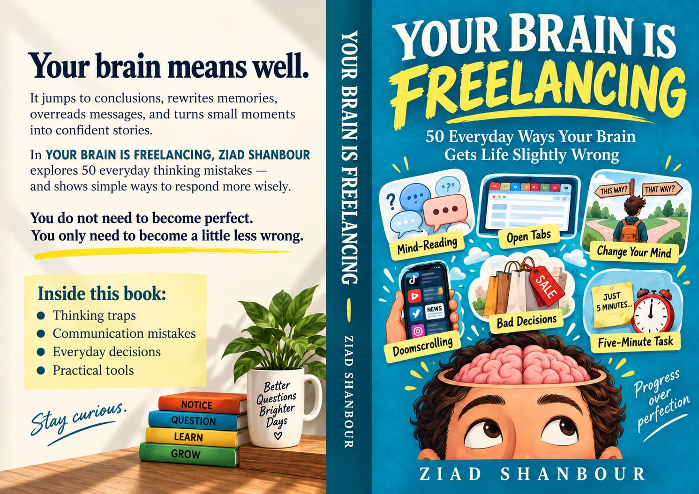
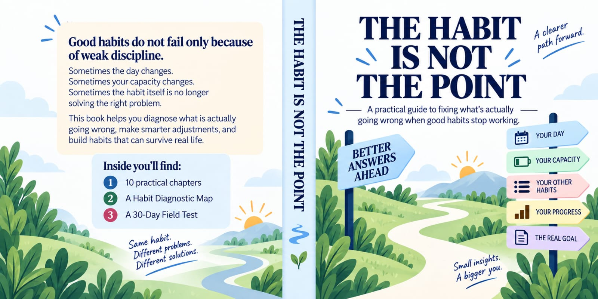
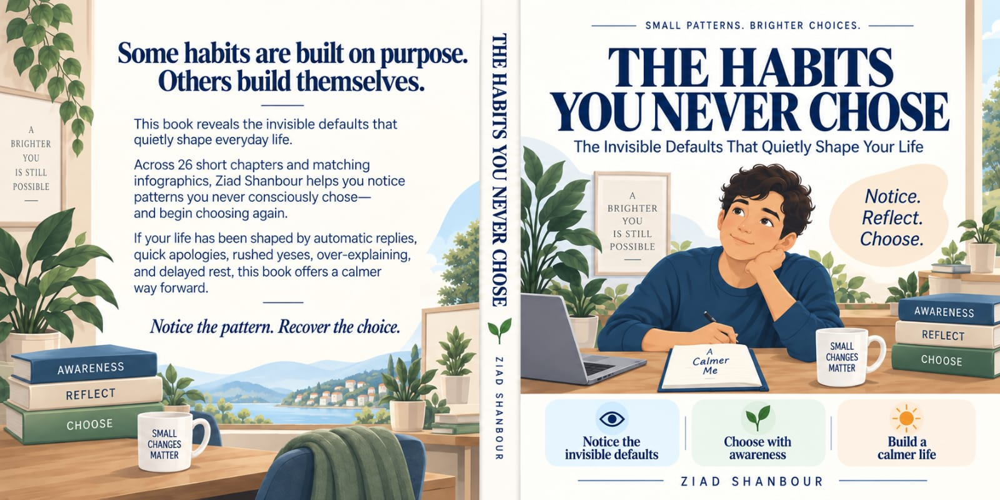
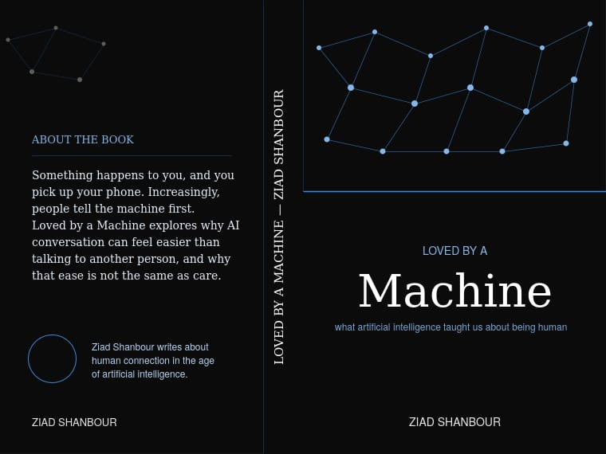
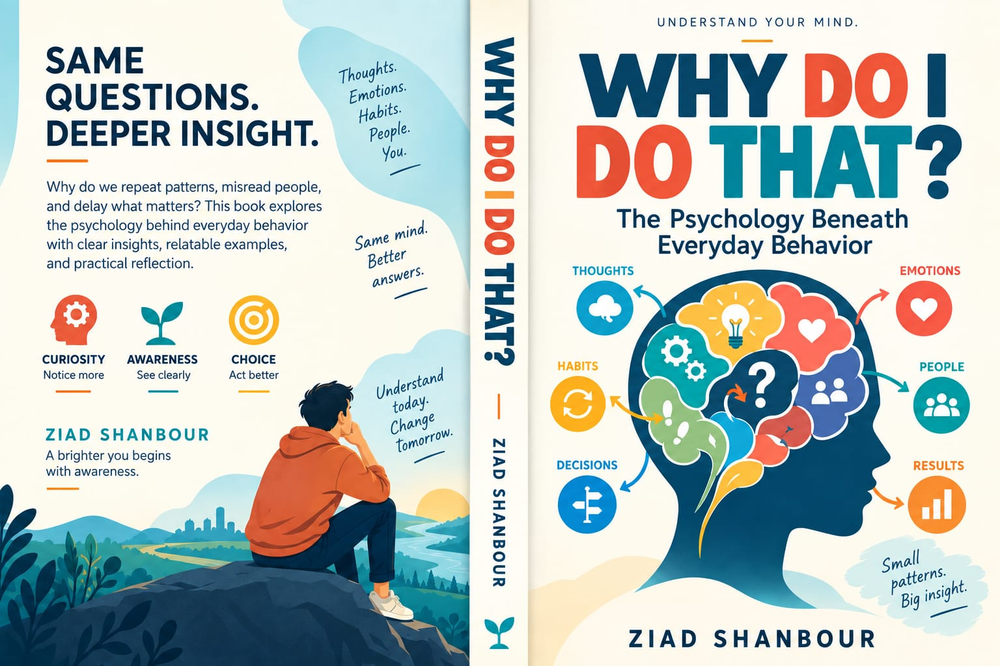

رحلتي في العلاج التكميلي والبديل
الحجامة وأساليب العلاج التكميلي، التدريب الذاتي والاسترخاء، تقنيات تعديل السلوك، فهم أنماط الشخصية باستخدام مؤشر MBTI، تنمية التركيز والانتباه والذاكرة، استكشاف قدرات العقل البشري والتصور الذهني.
جلسة واحد لواحد مع زياد شنبور، دردشة أو مكالمة أو فيديو، للفضفضة والمساعدة والتوجيه بدون حكم وبدون استعجال.
يسعى زياد شنبور لتوجيه المستفيد من خلال التوازن الشامل والمتكامل. المرشد لا يشخّص ولا يعالج طبياً، بل يرافق ويوجّه ويطرح أسئلة ويقترح خطوات صغيرة قابلة للتطبيق، مع استماع كامل وعميق وتحليل للمواقف والمشاعر ومسار يومي منظم.

باحث وممارس في مجالات العلاج التكميلي والبديل، والتنويم الإيحائي، وتطوير القدرات الإنسانية والسلوكية.
أؤمن بأن الإنسان يمتلك قدرات وإمكانات واسعة، وأن فهم العقل والجسد والسلوك يمثل خطوة أساسية نحو تحسين جودة الحياة وتحقيق التوازن النفسي والجسدي. من هذا المنطلق، كرّست اهتمامي للبحث والتعلم والتطبيق في مجالات العلاج التكميلي والبديل، والتدريب الذاتي، وتعديل السلوك، وفهم أنماط الشخصية، وتنمية التركيز والانتباه والقدرات الذهنية.
الحجامة وأساليب العلاج التكميلي، التدريب الذاتي والاسترخاء، تقنيات تعديل السلوك، فهم أنماط الشخصية باستخدام مؤشر MBTI، تنمية التركيز والانتباه والذاكرة، استكشاف قدرات العقل البشري والتصور الذهني.
التعامل مع مشكلات سلوكية لدى الأطفال، صعوبات التركيز والتشتت، الحالات المرتبطة بالألم والمشكلات الصحية من منظور الطب التكميلي، وتطوير أساليب تدريبية تساعد الأطفال والبالغين على اكتشاف قدراتهم الذهنية وتنمية الانتباه والتصور والذاكرة.
فهم العلاقة بين العقل والسلوك، ودور الإيحاء والاسترخاء والتدريب الذهني في إحداث تغييرات سلوكية إيجابية.
رسالتي هي المساهمة في نشر المعرفة، وتطوير أساليب تدريبية وتطبيقية تساعد الإنسان على فهم نفسه وتقديم الأفضل للآخرين، وترك أثر إيجابي في المجتمع والحياة الإنسانية.
تعرّف على مجالات اهتمامي ومساهماتي، واختر المسار الذي ترغب في استكشافه.
مجموعة من 7 كتب في مجالات فهم الذات، وتطوير القدرات الإنسانية، والوعي والسلوك.






في فضفضة معي نقدم مساحة دعم ومرافقة، ونختار معاً ما يناسبك من أدوات هادئة، بدون إلزام وبدون استعجال.
مساحة خاصة لتكمل كلامك على مهلك، نرتب الأفكار معاً، ونخرج بخطوة صغيرة قابلة للتطبيق.
نتعرف معاً، بلغة تعليمية هادئة، على ما هو التنفس ولماذا يهم التنفس الهادئ للجسم والذهن، وكيف يرتبط بالهدوء والانتباه. نناقش معاً ما يناسبك داخل الجلسة، بدون أي تمرين أو تعليمات خطوة بخطوة.
خلال الجلسة يمكن توجيه المتصل بلطف إلى ممارسات حركية صينية لطيفة، تقوم على البطء والهدوء والانتباه للجسم، بهدف استعادة التوازن الذهني والصحي والنفسي. نختار معاً ما يناسب حالتك وقدرتك، ويمكن التوقف في أي لحظة.
بعد الجلسة يمكن إرشاد المستفيد إلى تسجيلات صوتية قصيرة للاستماع الهادئ، تقوم على كلام ذاتي إيجابي وتخيل هادئ، للتهدئة والثقة والتركيز والتوازن. نناقش معاً كيف ومتى تستمع لها بطريقة مريحة.
نمنح حديثك وقته، ثم نساعدك على سماع ما وراء الكلمات وفهم ما يهمك.
نصغي إلى حديثك باهتمام، ونمنحك وقتاً لتقول ما تريد بالطريقة التي تريحك.
نتوقف عند المشاعر التي تذكرها ونحاول تسميتها وفهم أثرها عليك باحترام.
نرتب تفاصيل ما حدث وما يشغل بالك، خطوة خطوة، دون أن نستعجل الوصول إلى نتيجة.
نبحث معاً عما تحتاج أن تراه بوضوح، وما الخيارات الممكنة أمامك الآن.
وعد الجلسة: لا مقاطعة، لا حكم، لا استعجال. كلامك يأخذ وقته، ومشاعرك تُحترم، وقرارك يبقى لك.
تعرّف على مسارك اليوميترتيب هادئ يساعدك على رؤية التجربة من زوايا متعددة واكتشاف ما تحتاجه.
فصل الوقائع عن التفسير.
تسمية الأفكار المثقلة.
ملاحظة هادئة دون حكم.
مراجعة بهدوء.
وضوح؟ تقدير؟ راحة؟ مساحة؟
خيارات صغيرة وواقعية.
نقسم اليوم إلى وقفات قصيرة تساعدك على ملاحظة نفسك واختيار خطوة ممكنة.
لاحظ ما يشغل بالك وحدد ما تريد فهمه.
امنح أفكارك ومشاعرك مساحة لتظهر دون استعجال.
اكتب أو سمِّ ما يدور في ذهنك ورتبه إلى نقاط.
ابحث عن كلمات تصف شعورك وما يرافقه.
جرب استجابة صغيرة تناسب الموقف وقدرتك.
اختر عبارة أو طريقة تواصل أكثر هدوءاً ووضوحاً.
لاحظ ما تعلمته وحدد خطوة واقعية للأسبوع القادم.
معلومات تعليمية تساعد على فهم العلاقة بين التنفس والانتباه، دون ممارسة تمارين داخل هذا الشرح.
التنفس عملية حيوية يدخل فيها الهواء إلى الجسم ويخرج منه، وتتم تلقائياً ضمن وظائف الجسم اليومية.
ملاحظة التنفس قد تساعد بعض الناس على توجيه انتباههم إلى اللحظة الحالية وملاحظة تغير حالتهم.
التنفس جزء أساسي من عمل الجسم، ويتأثر بإيقاع النشاط والراحة وبالحالة العامة.
الانتباه إلى التنفس قد يكون نقطة تركيز بسيطة تساعد على ملاحظة الشرود والعودة إلى الحاضر.
يشرح المرشد معلومات عامة بلغة واضحة، ويناقش معك ما يناسبك دون فرض ممارسة أو تعليمات.
يمكن استكشاف حركات هادئة وبسيطة داخل الجلسة بما يلائم رغبتك وقدرتك.
قد تساعد الحركة المتأنية على الإحساس بإيقاع أكثر توازناً.
قد تمنحك مساحة للانتباه إلى الحركة واللحظة الحالية.
قد يجد بعض الأشخاص في الحركة الهادئة وقتاً مريحاً لأنفسهم.
الحركة المناسبة قد تدعم الإحساس بالمرونة والراحة ضمن حدود القدرة.
قد تساعد عادات الاسترخاء لدى بعض الأشخاص على الاستعداد للراحة.
الانتباه للحركة قد يدعم شعوراً بالتركيز لدى بعض الممارسين.
مسار تعليمي تدريجي للتعرف على التأمل وممارساته وملاحظة أثرها الشخصي بهدوء.
التأمل مجموعة من الأساليب التي تدرب الانتباه والوعي بالحاضر، وقد تتضمن توجيه الانتباه إلى موضوع محدد أو ملاحظة الأفكار والأحاسيس دون التفاعل معها فوراً. تختلف الطرق والأهداف والتجارب من شخص إلى آخر.
نتعرف إلى ما تقوله الأبحاث حول الانتباه، وملاحظة الشرود والعودة إلى المهمة.
نستكشف كيف يدرس الباحثون التوتر واستجابة الجسم، وما حدود الاستنتاجات.
التأمل لا يعني إيقاف الأفكار، بل ملاحظة ما يحدث والتعامل معه بوعي أكبر.
فهم معنى التأمل والتعرف إلى الشرود بوصفه جزءاً طبيعياً من تجربة الانتباه.
الانتباه، الوعي، الشرود، والعودة بلطف.
تمييز الفكرة عن الانتباه إليها، ووصف تجربتك بوضوح.
لقاء أسبوعي ضمن الأسابيع الستة.
اسأل عن دورة التأملالتعرف إلى الإحساس الجسدي كموضوع للانتباه الواعي.
الملاحظة، الراحة، وحدود الجسد.
وصف الإحساس بلغة محايدة واحترام ما يلائمك.
لقاء أسبوعي ضمن الأسابيع الستة.
اسأل عن دورة التأملزيادة الوعي بما يظهر في الذهن دون لوم الذات.
الأفكار والمشاعر والملاحظة الواعية.
التعرف إلى الأنماط الذهنية والتعامل معها بفضول ورفق.
لقاء أسبوعي ضمن الأسابيع الستة.
اسأل عن دورة التأملفهم أسلوب مسح الجسم ومبادئ الاسترخاء الواعي.
الإحساس، الانتباه المتدرج، والاختيار الشخصي.
التعرف إلى بنية هذا النوع من التأمل ومتى قد لا يكون مناسباً.
لقاء أسبوعي ضمن الأسابيع الستة.
اسأل عن دورة التأملالتعرف إلى ممارسات توجه الانتباه نحو اللطف والامتنان.
الرفق بالنفس، المودة، والامتنان دون إجبار.
فهم التنويعات وكيفية اختيار ما يتوافق مع قيمك.
لقاء أسبوعي ضمن الأسابيع الستة.
اسأل عن دورة التأملتصميم طريقة واقعية للاستمرار أو التوقف الواعي.
المرونة، العوائق، والمراجعة الشخصية.
وضع خطة بسيطة تناسب وقتك وتفضيلاتك.
لقاء أسبوعي ضمن الأسابيع الستة.
اسأل عن دورة التأملمادة تعليمية مكتوبة، شرحاً متدرجاً للمفاهيم، لقاءات ومتابعة تساعدك على تقييم تجربتك والتعلم منها.
لمن يرغب في فهم التأمل من البداية واستكشاف أساليبه، مع الاستعداد لاحترام احتياجاته وحدوده الشخصية.
ستة أسابيع بلقاء أسبوعي، بصورة فردية أو ضمن مجموعة صغيرة، مع مادة واضحة ومتابعة.
إطار MBTI يصف التفضيلات، لا يصف قيمتك. نستخدمه كبداية للحوار وفهم اختلاف الطرق التي نلاحظ بها المعلومات ونتواصل ونتخذ القرارات، لا كتشخيص أو حكم ثابت.
كيف يستعيد الشخص طاقته؟ يختلف الناس في تفضيلهم للتفاعل الخارجي أو لقضاء وقت هادئ مع أفكارهم.
مثال موقفي في العمل والأسرة: بعد يوم عمل مزدحم، قد يفضّل شخص لقاء زملائه ومشاركة الحديث، بينما يفضّل آخر بعض الوقت الهادئ قبل الانضمام إلى الأسرة. كلا الخيارين مفهوم بحسب الشخص والسياق.
كيف ينتبه الشخص للمعلومات؟ قد يركز بعض الأشخاص على الوقائع والتفاصيل الملموسة، بينما يميل آخرون إلى الأنماط والاحتمالات والصورة الأوسع.
مثال موقفي: عند بدء مشروع، قد يسأل أحدهم عن الموارد والخطوات المعروفة، وقد يبدأ آخر بتصور الاحتمالات والاتجاهات الجديدة؛ ويستفيد الفريق من الطريقتين.
كيف يتخذ الشخص القرار؟ قد يعطي الشخص وزناً أكبر للتحليل والاتساق، أو لمراعاة القيم وأثر القرار على الناس.
مثال موقفي: عند توزيع مهمة في الأسرة، قد يقارن شخص بين الخيارات وفق معايير واضحة، بينما ينتبه آخر إلى ظروف أفراد الأسرة وشعورهم؛ ويمكن جمع الاعتبارين في قرار متوازن.
كيف ينظم الشخص حياته؟ قد يفضّل شخص التخطيط والحسم المبكر، بينما يفضّل آخر إبقاء الخيارات مفتوحة والتكيف مع المستجدات.
مثال موقفي: في رحلة مشتركة، قد يرغب أحدهم في إعداد جدول مسبق، وقد يستمتع آخر بترك مساحة للاستكشاف؛ ويساعد الاتفاق على الاحتياجات في تقليل الاحتكاك.
نناقش معاً كيف يتيح الفريق مساحة للطريقتين.
نناقش معاً كيف يسمع كل طرف احتياج الآخر.
نناقش معاً كيف نجمع بين الوضوح والاستماع الملائم للعمر.
نناقش معاً كيف يساعد التخطيط المرن على التعامل مع الضغط.
نناقش معاً كيف نبني حواراً يحترم اختلاف المنظورين.
عرض تعليمي مبسط لبعض النطاقات المرتبطة بنشاط الدماغ، وليس قياساً طبياً أو وصفاً لحالة شخص بعينه.
يُستخدم المصطلح لوصف نطاق يرتبط غالباً بحالات اليقظة والانتباه النشط. كيف قد تشعر؟ قد تشعر بأنك منشغل بمهمة أو تفكر في أمور متعددة.
يرتبط هذا النطاق في الشروحات التعليمية بحالات يقظة هادئة. كيف قد تشعر؟ قد تشعر براحة مع بقاء الوعي والانتباه.
يظهر هذا الوصف في سياقات الاسترخاء والنعاس وبعض مراحل النوم. كيف قد تشعر؟ قد تلاحظ خيالاً أو صوراً ذهنية مع استرخاء.
يُشار به إلى نطاق يرتبط بالنوم العميق. كيف قد تشعر؟ عادة لا نصف الإحساس به أثناء النوم العميق بوصفه تجربة واعية مباشرة.
يُدرس هذا النطاق ضمن موضوعات متعددة في نشاط الدماغ. كيف قد تشعر؟ لا يمكن استنتاج شعور محدد أو قياس هذا النشاط من الإحساس وحده.
معلومات عامة تساعد على بناء عادات رعاية متوازنة، مع الرجوع للمختص بشأن الاحتياجات الصحية الفردية.
مصطلح شائع لأطعمة غنية بعناصر غذائية متنوعة، لكنه ليس تصنيفاً طبياً ولا يعني أن طعاماً واحداً يعالج المرض أو يغني عن تنوع الغذاء.
تختلف الاحتياجات والتوصيات بحسب الحالة الصحية والحساسية والأدوية؛ اختر طعامك بما يناسبك واستشر المختص عند الحاجة.
من اختيار الطريقة وحتى بدء الحديث، نمضي بالخطوات التي تناسبك.
حدد ما ترغب بالحديث عنه والطريقة التي تشعرك براحة أكبر.
أرسل طلبك بموعد مفضل وسنتواصل معك لتأكيد التفاصيل.
بعد تأكيد الموعد نلتقي بالطريقة المتفق عليها وفي مساحة خاصة.
يسأل بلطف عن راحتك.
يقترح فكرة واحدة مناسبة.
يوجهك بكلام هادئ.
يتابع معك ما لاحظته.
أرسل التفاصيل التي تساعدنا على ترتيب موعد مناسب لك. سنتواصل معك لتأكيد الطلب.